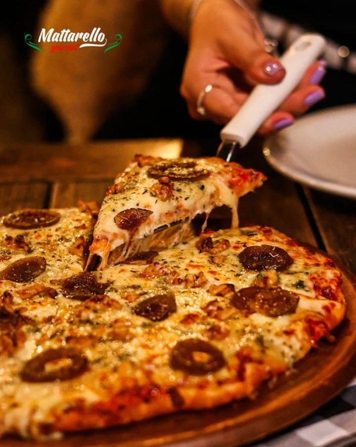
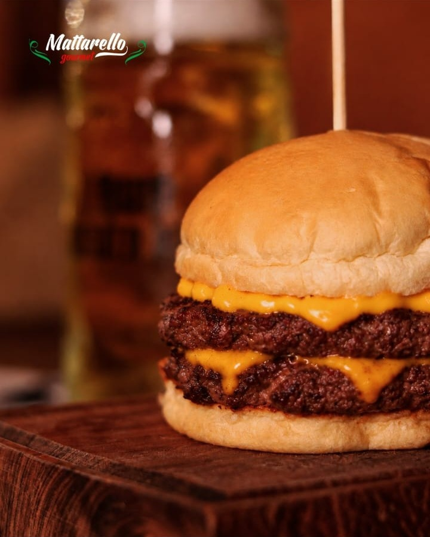
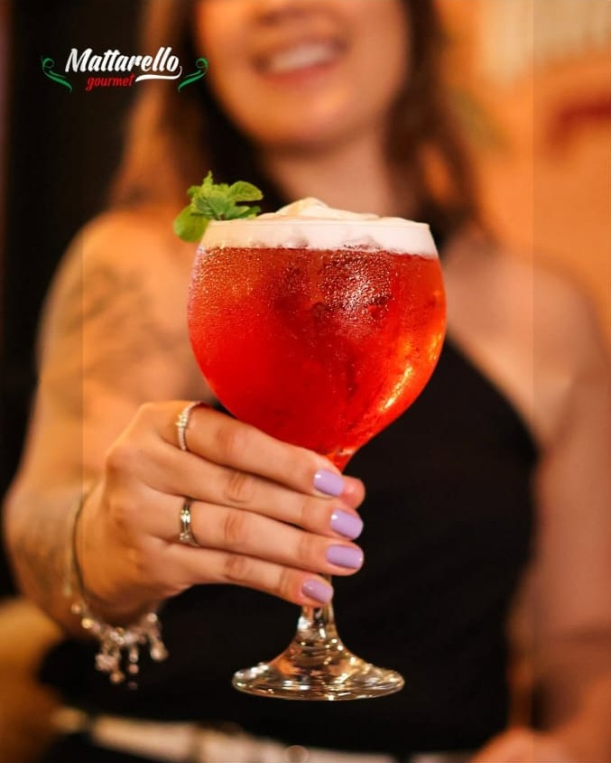
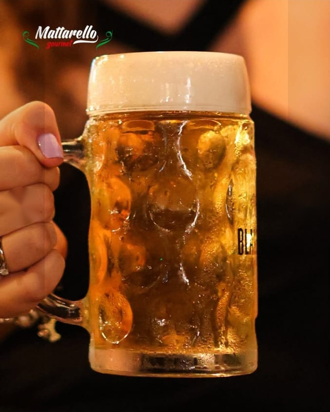
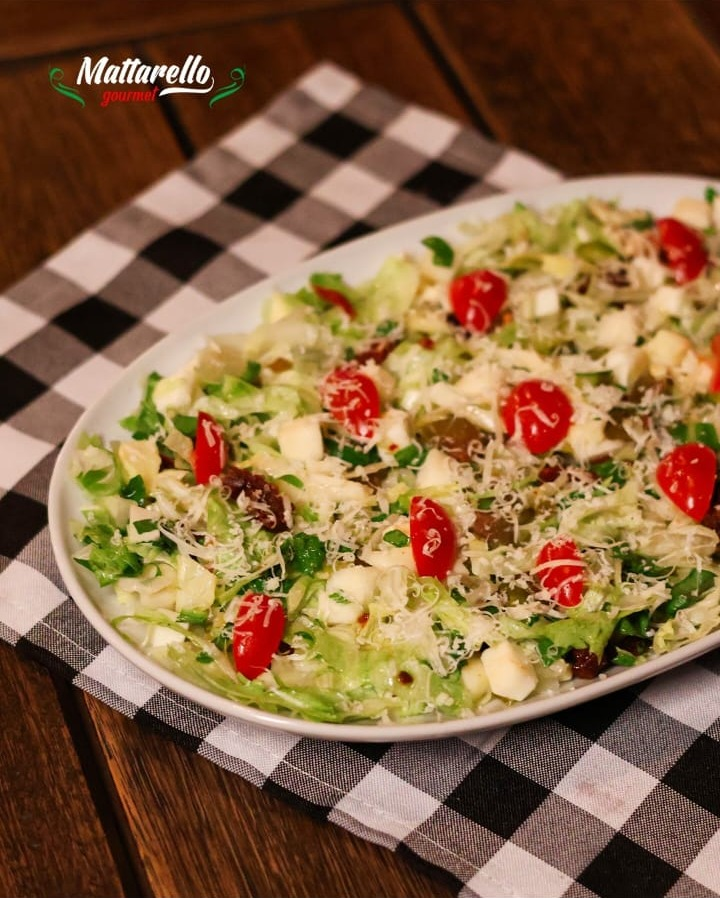
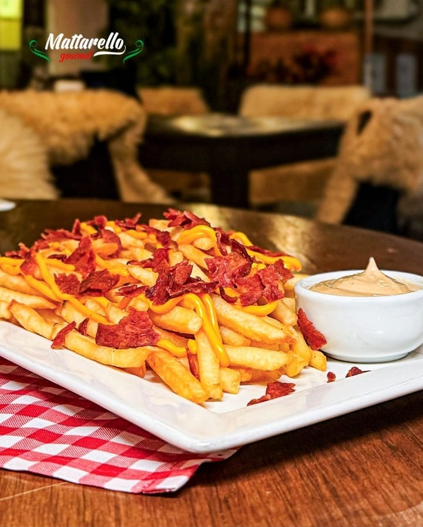
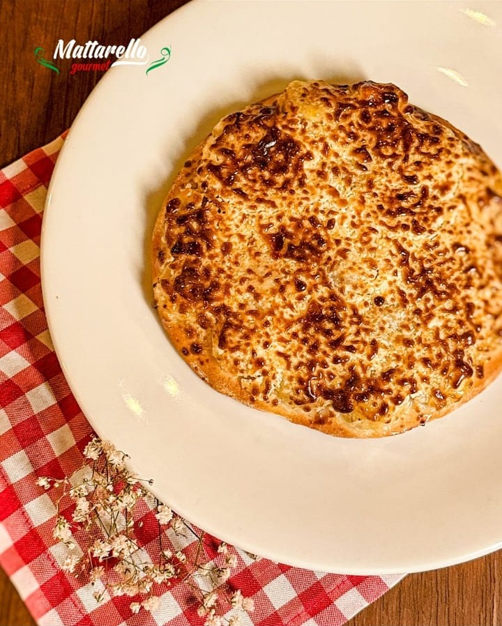
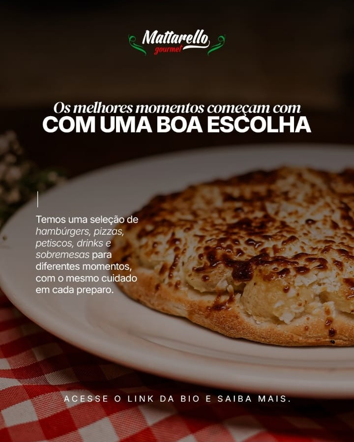

Pizzas
Pizza quente, queijo esticando.
Massa dourada, muito queijo e cobertura generosa, direto do forno para a sua mesa.
Pizzas
Pizza quente, queijo esticando.
Massa dourada, muito queijo e cobertura generosa, direto do forno para a sua mesa.
Hamburgueria
Dois blends, muito cheddar.
Hambúrguer duplo, pão macio e aquele queijo escorrendo. Combina com um chopp gelado.
Drinks
Drinks para brindar a noite.
Opções geladas e refrescantes para acompanhar a pizza ou fechar a noite com estilo.
Chopp
Chopp gelado e cremoso.
Para brindar com os amigos e combinar com hambúrguer, porção ou pizza.
Saladas frescas
Leve, fresca e cheia de sabor.
Folhas crocantes, tomate-cereja e queijo para abrir a mesa do jeito certo.
Porções
Para dividir e repetir.
Fritas com cheddar e cobertura crocante, com molho para mergulhar. Pede mais uma rodada.
Gratinadas
Gratinada no ponto certo.
Dourada por cima, macia por dentro e saindo quentinha para a sua mesa.
Pizzas & drinks
Pizza, drink e boa companhia.
O jantar, o happy hour e o fim de semana ganham outro sabor no Mattarello.
Cardápio
Uma casa, muitas escolhas.
Hambúrgueres, pizzas, petiscos, drinks e sobremesas para diferentes momentos, com o mesmo cuidado em cada preparo.








A casa
No Mattarello Gourmet, cada prato é pensado para a mesa cheia: preparo caprichado e um ambiente aconchegante para o jantar em família, o encontro com amigos ou aquele fim de semana que merece muito sabor.
Massa, queijo e cobertura em equilíbrio, saindo quentinha para a sua mesa.
Blends suculentos, queijo derretido e pão macio, do jeito que tem que ser.
Drinks e chopp gelado, além de saladas e porções para dividir.
Fim de semana
A melhor gastronomia da região espera por você no Mattarello. Reúna a turma, escolha a sua pizza, peça um drink e aproveite a noite.
Venha saborear
Visite o Mattarello ou peça sem sair de casa. Do jeito que for, o sabor chega até você.
01
Ambiente aconchegante para o jantar em família, o encontro com amigos e o happy hour de fim de semana.
Como chegar02
Peça também pelo iFood e receba pizzas, hambúrgueres e porções onde você estiver.
Abrir no iFood